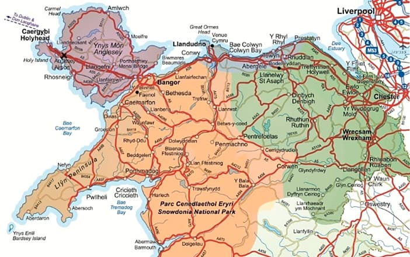
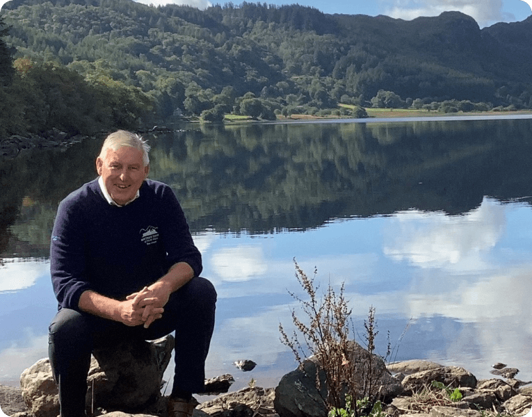
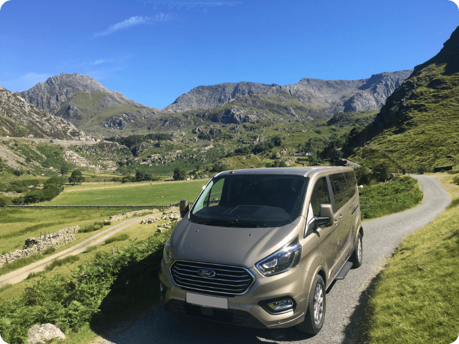

About Boutique Tours of North Wales
- Quality Custom Designed Tours
- Professionally Trained Tour Guide
- Spacious Executive Touring Vehicles
“We are one of a few private tour operators in the world with a consistent 5 Star rating from our customers!”

- Home
- About Us
We Are One of the Leading Private Driver Guided Tour Companies!

PLEASE NOTE; We have since replaced the Mercedes Viano featured in this video with a more spacious executive touring van. See the section lower down the page ‘About Our touring Vehicle’’
Boutique Tours of Wales has been operating private tours since 2009 and is recognised as “one of the leading private tour companies” in Wales and all of Great Britain!
We specialise in operating private small group tour services, providing a great choice of attractive sightseeing tours of North Wales, the Snowdonia National Park and the Isle of Anglesey.
We are delighted to have won yet another award from Trip Advisor, with the 2026 Travellers’ Choice Award!
As far as we know, we are the only private tour company to have achieved five constant years of awards from Trip Advisor with their Certificate of Excellence, which put us into the very select ‘Hall of Fame’ category.
We are truly recognised as a leading private tour company, not just in Wales, but all of Great Britain, with two further Traveller’s Choice Awards, putting us amongst the top tour businesses in the world!

A local tour company based in the North of Wales
We are a local tour company based in the North of Wales. All our tours operate on a private basis and can be custom designed around what you want to see and do.
Our services primarily feature tours in and around the North Wales area covering the coastal and borderland areas, the Snowdonia (Eryri) National Park, the Isle of Anglesey and the Llyn Peninsula.
You will find we cover the tour region better than almost any other tour company and we’ll take you places that the bigger tour buses can’t reach!
Our tour can start out from anywhere across the North Wales area and we also start many of our multi day private tours from Chester, Liverpool and Manchester.

Introducing Your Very Own Private Tour Director
I would personally like to welcome you to Wales, where you are literally ‘one in a million!’ (That’s the average annual number of international visitors who come to visit and discover the beauty of Wales each year)!
It will be my personal pleasure to be of service to you and to take care of your during your visit and time here in North Wales. From your very first initial enquiry, I am with you literally every step of the way. I will help to custom design your tour and help you make the most of your visit to our beautiful country of Wales.
When you come touring with me I will show you so much more. I will introduce you to our amazing history, the unique culture and language, along with the most stunning scenic landscapes to be found in Wales. You will also get to discover the real Wales, where I take you off the normal roads amongst the beautiful old drover roads and back roads of Wales, touring through farms, beautiful rolling countryside and along stunning coastlines.’
So when you book your tour with me, you get me!
I very much look forward to being of service to you with my professional and reliable private tour services.
Your Tour Director and Owner, Boutique Tours of North Wales

Professionally Trained and Experienced Tour Guide
I developed my own tour business when I returned to Wales after working in the travel industry for over 30 years with some of the top international tour operators and one of the world’s leading international cruise lines (Cunard).
My tour guide training was through a very professional international guide school in Denmark and I have worked in many European countries as a tour guide and courier to thousands of international visitors.
Tour in Comfort and Space
Our Touring Vehicle
We operate with a modern luxury executive Tourneo Custom (MPV), which is licensed to carry up to a maximum of 7 persons and has been specially designed to cope with touring the small backroads of Wales, allowing you to discover the real country.
You will get to enjoy touring in the comfort and space of the vehicle as we tour the remote regions that are not accessible by the traditional coach tours.
You’ll find our executive touring vehicle is among the most spacious and comfortable to tour in. Even when we have a full complement of 7 passengers, the leg room is not compromised and you’ll find it perfect for your private driver guided tour experience with Boutique Tours of Wales.
As part of our company policy, we update and change our touring vehicles every three years, so you get to tour in comfort and style, with a very reliable private tour service.
- Ford Tourneo Custom Titanium executive MPV, for up to 7 guests
- Leather seats, raised seating and sliding doors on both sides
- Air-conditioning, heating and a USB socket on every row
- A microphone for narration and complimentary still water
- Licensed by Flintshire County Council: operator PO 067, vehicle PHV 550, driver PHD 290
“It’s touring without the crowds!”
Reviews from Our Customers